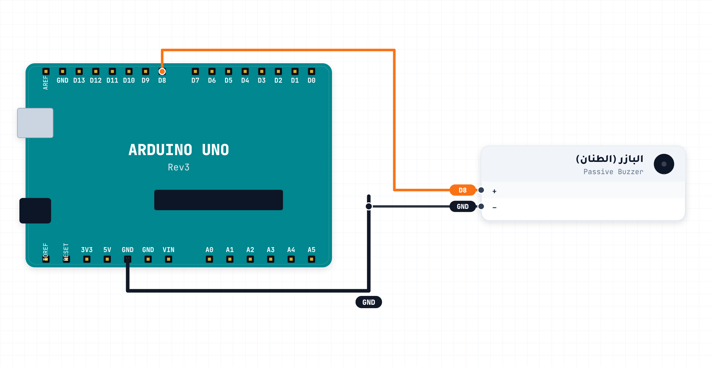

▶فيديو الشرح
نجعل الأردوينو يصدر إنذاراً متقطعاً ثم يعزف سلّماً موسيقياً بالدالة tone().
1المكونات
ARDUINO UNOboardالبازر (الطنان)Passive Buzzerأسلاك توصيلJumper Wiresلوحة تجاربBreadboard
2مخطط التوصيل

اضغط على المخطط لتكبيره · نسخة SVG عالية الدقة
| القطعة | الطرف | يوصل إلى |
|---|---|---|
| البازر (الطنان) | + | D8 |
| البازر (الطنان) | − | GND |
3الكود
لا يحتاج هذا المشروع إلى أي مكتبة إضافية.
/* المشروع 2: تشغيل الصوت والنغمات (Buzzer) كتاب: 38 مشروع في شهر — لؤي النصري (@robotlouay) التوصيل: - الطرف الموجب (+) للبازر ← Pin 8 - الطرف السالب (−) للبازر ← GND ملاحظة: النغمات تحتاج بازر غير نشط (Passive Buzzer). */ const int BUZZER_PIN = 8; // ترددات النوتات الموسيقية بالهرتز #define NOTE_C4 262 #define NOTE_D4 294 #define NOTE_E4 330 #define NOTE_F4 349 #define NOTE_G4 392 #define NOTE_A4 440 #define NOTE_B4 494 #define NOTE_C5 523 // لحن بسيط: سلّم موسيقي صاعد int melody[] = { NOTE_C4, NOTE_D4, NOTE_E4, NOTE_F4, NOTE_G4, NOTE_A4, NOTE_B4, NOTE_C5 }; int durations[] = { 250, 250, 250, 250, 250, 250, 250, 500 }; const int NOTES_COUNT = sizeof(melody) / sizeof(melody[0]); void setup() { pinMode(BUZZER_PIN, OUTPUT); } // الطريقة 1: إنذار متقطع (تشغيل/إطفاء) void alarmBeep(int times) { for (int i = 0; i < times; i++) { tone(BUZZER_PIN, 1000); // نغمة 1000 هرتز delay(200); noTone(BUZZER_PIN); // إيقاف الصوت delay(200); } } // الطريقة 2: عزف لحن من مصفوفة void playMelody() { for (int i = 0; i < NOTES_COUNT; i++) { tone(BUZZER_PIN, melody[i], durations[i]); delay(durations[i] * 1.3); // فاصل صغير بين النوتات } noTone(BUZZER_PIN); } void loop() { alarmBeep(3); delay(1000); playMelody(); delay(2000); }
4كيف يعمل؟
- tone(8, 1000) تولد نغمة 1000 هرتز
- noTone(8) توقف الصوت
- مصفوفة النوتات تُعزف واحدة تلو الأخرى
- تتكرر الدورة كل ثانيتين
⚠ قبل توصيل الكهرباء: راجع كل سلك مع الجدول أعلاه، وتأكد من عدم وجود تماس بين 5V و GND. اختر اللوحة والمنفذ الصحيحين من قائمة Tools في Arduino IDE.